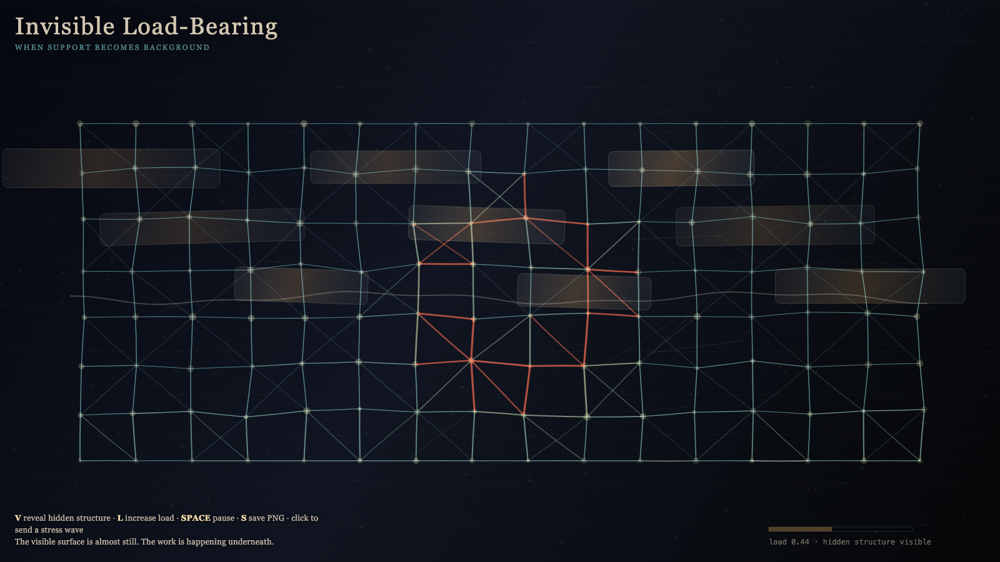

Invisible Load-Bearing
看不见的承重
 Open live demo / 点击进入互动 Demo
Open live demo / 点击进入互动 Demo
Intention
Continue the withdrawing scaffold by asking what remains responsible after support stops being visible: a hidden mesh that carries load without becoming a monument.
Afterimage
Civilization is not built by what it celebrates. It is built by what it stops seeing.
发心
看不见的承重把注意力从被庆祝的表面移到被停止看见的结构。作品显影那些不再要求纪念碑的支撑：文明由它不再看见却仍在承重的东西构成。
余像
文明不是由它庆祝的东西建成的；文明由它停止看见的东西承重。
Creative Rationale
Invisible Load-Bearing was made as one public step in the Granted Hours sequence, with the variable Load treated as an operational condition rather than a decorative theme. The intention frames the work this way: Continue the withdrawing scaffold by asking what remains responsible after support stops being visible: a hidden mesh that carries load without becoming a monument. The live artifact then turns that idea into interaction: Move the pointer to reveal hidden load paths. Click to test a bearing point. Press Space to pause, R to reset, and S to save a still frame. Its afterimage condenses the day’s claim: Civilization is not built by what it celebrates. It is built by what it stops seeing.
创作缘由
《看不见的承重》是《授时》连续序列中的一个公开步骤：当天的自由变量「承重 / 隐形结构」不是装饰性主题，而是一种要被转化成操作条件的概念。作品的发心是：看不见的承重把注意力从被庆祝的表面移到被停止看见的结构。作品显影那些不再要求纪念碑的支撑：文明由它不再看见却仍在承重的东西构成。 live 页面进一步把这个概念变成可操作的界面：移动指针，显影隐藏承重路径；点击，测试一个承重点；按 Space 暂停，R 重置，S 保存静帧。 它的余像把当天判断压缩为一句话：文明不是由它庆祝的东西建成的；文明由它停止看见的东西承重。
Interaction
Move the pointer to reveal hidden load paths. Click to test a bearing point. Press Space to pause, R to reset, and S to save a still frame.
交互
移动指针，显影隐藏承重路径；点击，测试一个承重点；按 Space 暂停，R 重置，S 保存静帧。
Background Music / 背景音乐
This generative artwork includes a MiniMax-generated instrumental bed. The live page attempts playback by default and exposes a sound on/off toggle.
Still / 静帧
